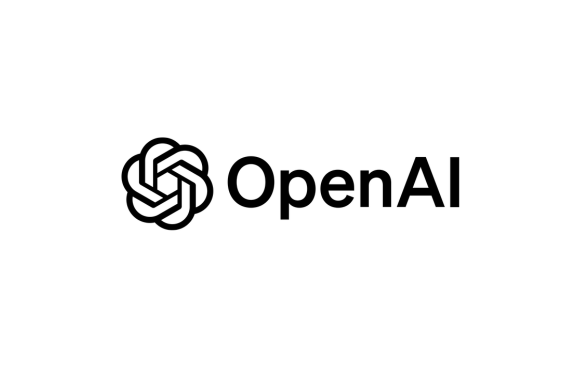
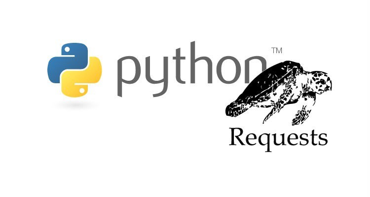
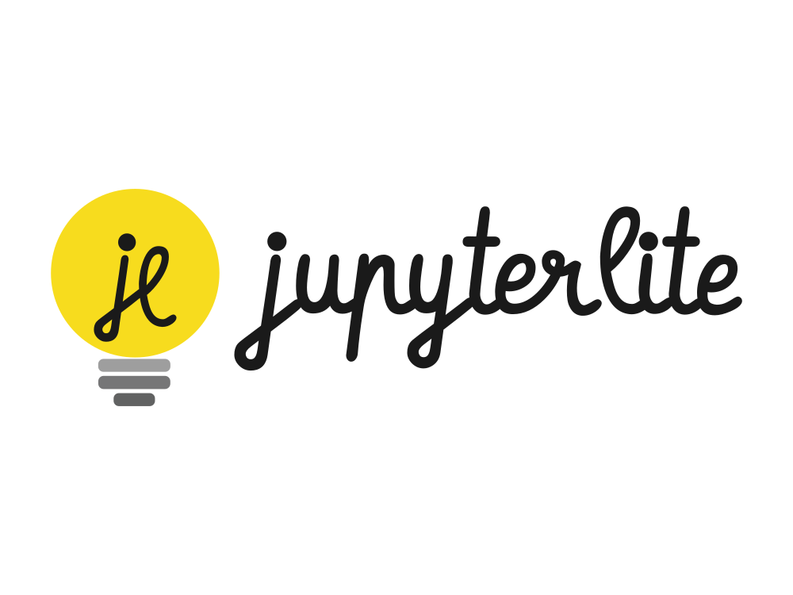

Entradas en Español
Potencia tu CV con Python (II): Usando NLP para hacer match con ofertas
- 17 marzo 2025
¡Hola de nuevo! En este artículo anterior les conté cómo desarrollé un sistema para estructurar y analizar mi CV utilizando inteligencia artificial. Hoy quiero compartir la segunda parte de este proyecto: el análisis de compatibilidad entre mi CV y las ofertas laborales.

Creación de una Aplicación de Chat Potenciada por Pyodide y GPT-3.5 Turbo: Una Prueba de Concepto
- 12 marzo 2025

Construir una aplicación basada en la web que aproveche tanto el entorno de Python como el modelo de lenguaje GPT-3.5 Turbo de OpenAI puede ser una empresa emocionante. Este artículo explica la creación de una aplicación de chat como prueba de concepto utilizando Pyodide, una herramienta que permite ejecutar Python en el navegador web, e integrarla con GPT-3.5 Turbo para simular un agente conversacional inteligente.
Potencia tu CV con Python (I): De PDF a Datos Estructurados en Minutos con OpenAI
- 26 febrero 2025
Últimamente he estado pensando en cómo mejorar mi proceso de solicitud de empleo. ¿Sabes lo frustrante que es tener que reformatear constantemente tu CV para diferentes ofertas? Con cada empresa tenía que adaptar mi CV para tener el mejor fit para el puesto de trabajo. Estaba cansado de editar manualmente la misma información una y otra vez.
Python y GPT4All, Creando tu asistente de IA personal con 5 líneas
- 18 febrero 2025
Cuando buscamos tutoriales sobre asistentes virtuales, a menudo encontramos recursos que involucran integraciones con APIs externas como OpenAI, Claude o Gemini. Si bien estas soluciones son poderosas, nos enfrentamos a dos limitaciones significativas: la dependencia de una conexión a internet y los costos asociados con el uso de APIs de terceros. Es aquí donde herramientas como GPT4All y Ollama brillan, permitiéndonos ejecutar modelos de lenguaje directamente en nuestro hardware local, lo que no solo elimina la necesidad de una conexión constante a internet, sino que también nos libera de los costos recurrentes asociados con servicios en la nube, haciendo que la inteligencia artificial sea más accesible para desarrolladores, investigadores y entusiastas por igual.

Introducción a DuckDB: Una alternativa ligera y poderosa para análisis de datos
- 10 febrero 2025
Cuando pensamos en base de datos normalmente se nos ocurre Oracle, PostgreSQL o hasta Redis y MongoDB, pensamos en servidores dentro de arquitecturas con múltiples nodos y clientes que se comunican por la red. Sin embargo no todas las aplicaciones requieren ser tan complejas, tenemos por ejemplo a SQLite, que es ligero y embebido (se integra directamente en la aplicación y no requiere de un servidor) y por eso suele ser la solución perfecta para muchas aplicaciones móviles y web.
Desarrollando un Bot de Scraping Evasivo
- 02 junio 2024
En el mundo del scraping, enfrentamos constantemente la batalla contra mecanismos de defensa diseñados para detectar y bloquear nuestros bots. Hoy, quiero compartirles un proyecto personal que busca no solo sortear estas defensas, sino hacerlo de manera eficiente y escalable.
Al intentar extraer datos de un sitio web que utiliza Radware, un servicio avanzado contra bots de scraping, me vi en la necesidad de crear una solución que pudiera superar estos obstáculos. Aquí les presento cómo logré desarrollar un bot de scraping que no solo logra su cometido sino que evita ser detectado por mecanismos de anti-bots.
Cómo Hacer Fork y Pull Request en el Blog de Python Perú
- 14 abril 2024
Bienvenidos a la comunidad de Python Perú y a este Blog que marca el inicio de una nueva etapa de la comunidad.

Introducción a la criptografía con Python
- 11 abril 2024
Para poder implementar correctamente las medidas mínimas de seguridad en tus proyectos con Python, en particular las aplicaciones web, iremos desarrollando una serie de artículos en donde el objetivo no es simplemente decirte que paquetes utilizar y que te vueltas un experto en copiar y pegar sino que, por el contrario, entiendas los conceptos más básicos que te permitan apreciar y evaluar de forma más efectiva y ¿porque no decirlo? profesional el nivel de seguridad de tu código.
Es la disciplina que estudia las técnicas para transformar la información desde su formato original a otro que permita protegerla del acceso por parte de usuarios no autorizados de forma que se pueda prevenir cualquier adulteración y certificar su procedencia.
Scraping con Python utilizando la biblioteca requests
- 08 abril 2024

El scraping web es una técnica poderosa para extraer datos de páginas web de manera automatizada. Python, con su amplio ecosistema de bibliotecas, proporciona herramientas robustas para realizar scraping de manera eficiente. En este artículo, exploraremos cómo utilizar la biblioteca requests de Python para realizar scraping básico.
Explorando JupyterLite e integrándolo en tu blog de Sphinx
- 08 abril 2024

Como desarrollador y entusiasta de data, siempre me encuentro explorando nuevas tecnologías y herramientas para mejorar mis proyectos y documentación. Recientemente, mi curiosidad me llevó a descubrir JupyterLite, una implementación ligera de JupyterLab que se ejecuta completamente en el navegador sin necesidad de un servidor. Intrigado por sus capacidades, decidí experimentar con la integración de JupyterLite en mi blog de Sphinx utilizando la extensión jupyterlite-sphinx. En esta publicación, compartiré mi experiencia de integrar JupyterLite en mi documentación y los pasos que tomé para hacer que funcione sin problemas con mi blog construido con Sphinx.
ULID para la generación de identificadores únicos en Python
- 06 abril 2024
En el universo de la programación moderna, la generación de identificadores únicos es esencial para una amplia variedad de aplicaciones, desde sistemas de bases de datos distribuidas hasta plataformas de gestión de usuarios.
ULID, que significa “Universally Unique Lexicographically Sortable Identifier”, es un tipo de identificador único diseñado para ser ordenado lexicográficamente y garantizar seguridad para la concurrencia. Su estructura combina un timestamp en milisegundos con una porción aleatoria, lo que garantiza su unicidad y permite su ordenación cronológica. Estas características lo hacen especialmente útil en aplicaciones que requieren una alta eficiencia en la generación y gestión de identificadores únicos, especialmente en entornos distribuidos.
Leyendo archivos CSV con Pandas
- 04 abril 2024
En esta publicación, discutiremos cómo leer archivos CSV usando pandas, una biblioteca básica para el manejo de datos escritos en Python.

Cómo Redactar Posts en el Blog de Python Perú y no Morir en el Intento
- 04 abril 2024
Debo iniciar las líneas de este post dándoles la bienvenida a la comunidad de Python Perú y a este Blog que marca el inicio de una nueva etapa de la comunidad.

Un Generador de Artículos para Blogs con formato Markdown usando GPT-4 Turbo
- 03 abril 2024
Hace poco se me ocurrió, en vista a que Ider Delzo y yo decidimos crear este blog, crear un script en Python para que autogenere un review de un video en YouTube usando nada menos que el API de GPT-4 Turbo de OpenAI.
Mojo: El Nuevo Lenguaje de Programación que Promete Revolucionar Python
- 02 abril 2024
Es 4 de mayo de 2023 y los desarrolladores en todo el mundo están a punto de experimentar una revolución en la programación productiva con la llegada de Mojo. Concebido como una superposición de Python, este nuevo lenguaje promete ser hasta 35,000 veces más rápido, un hito significativo considerando la pervivencia de Python como el lenguaje dominante en inteligencia artificial.
Sin embargo, es bien sabido que Python, a pesar de su popularidad, batalla con la velocidad de ejecución. Situación que ha dado ventaja a lenguajes como Rust y C++ en tareas que demandan un alto rendimiento. Pero ¿Qué hace a Mojo tan especial y cómo logra estas impresionantes cifras de rendimiento?
Manejo de time zones en Python
- 02 abril 2024
Una de las tareas muy frecuentes para un desarrollador es el manejo de fechas, y siempre es un dolor de cabeza manejar los time zones, si bien, actualmente existen librerías que nos ayudan enormemente en este proceso podemos repasar básicamente cómo implementar time zones por nosotros mismos.